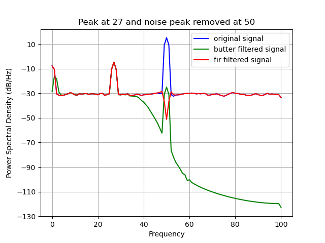

FIR filter#
- filters.frequency.fir(data, f_low, f_high, trans_width, fs, ripple_pass_band=0.0001, stop_band_suppression=1e-06, fft_win_sz=2, pad_type='zero', mode='fast')#
Constructs an FIR filter and applies it to data.
f_low = None and f_high = value creates a lowpass filter f_low = value and f_high = None creates a highpass filter f_low = value and f_high = value creates a bandstop or bandpass filter. In case f_low < f_high, a bandpass is created; if f_low > f_high a bandstop filter is created.
This filter is always a zero-phase filter.
- Parameters:
data – Data to be filtered. Single vector of data.
f_low – Start of the pass band.
f_high – End of the pass band.
trans_width – Width of the transition band.
fs – Sampling frequency.
ripple_pass_band – Suppression of the ripple in the pass band.
stop_band_suppression – Suppression of the stop band.
fft_win_sz – Size of the fft window.
pad_type – Type of padding. Supported types are: zero and mirror
mode – Defines whether the FIR filter is executed in fast or precise mode (32 vs 64 bit floats)
- Returns:
Filtered data.
The following code example shows how to apply the FIR filter.
import numpy as np
import random
import matplotlib
matplotlib.use("Qt5agg")
import matplotlib.pyplot as plt
import finn.filters.frequency as ff
#Configure sample data
channel_count = 1
frequency = [random.randint(5, 50) for _ in range(channel_count)]
data_range = np.arange(0, 10000)
frequency_sampling = 200
#Configure noise data
frequency_noise = 50
shared_noise_strength = 10
random_noise_strength = 1
#Generate some sample data
raw_data = [None for _ in range(channel_count)]
for ch_idx in range(channel_count):
genuine_signal = np.sin(2 * np.pi * frequency[ch_idx] * data_range / frequency_sampling)
shared_noise_signal = np.sin(2 * np.pi * frequency_noise * data_range / frequency_sampling) * shared_noise_strength
random_noise_signal = np.random.random(len(data_range)) * random_noise_strength
raw_data[ch_idx] = genuine_signal + shared_noise_signal + random_noise_signal
raw_data = np.asarray(raw_data)
#Filter data - butter
filtered_butter_data = [None for _ in range(channel_count)]
for ch_idx in range(channel_count):
filtered_butter_data[ch_idx] = ff.butter(raw_data[ch_idx], 1, 40, frequency_sampling, order = 7, zero_phase = True)
filtered_butter_data = np.asarray(filtered_butter_data)
#Filter data - fir
filtered_fir_data = [None for _ in range(channel_count)]
for ch_idx in range(channel_count):
filtered_fir_data[ch_idx] = ff.fir(raw_data[ch_idx], 52, 48, 0.1, frequency_sampling, ripple_pass_band = 1e-5, stop_band_suppression = 1e-7, fft_win_sz = frequency_sampling, pad_type = "zero")
filtered_fir_data = np.asarray(filtered_fir_data)
#visualize result
plt.title("Peak at %i and noise peak removed at %i" % (frequency[0], frequency_noise))
plt.psd(raw_data[0, :], NFFT = frequency_sampling, Fs = frequency_sampling, color = "blue", label = "original signal")
plt.psd(filtered_butter_data[0, :], NFFT = frequency_sampling, Fs = frequency_sampling, color = "green", label = "butter filtered signal")
plt.psd(filtered_fir_data[0, :], NFFT = frequency_sampling, Fs = frequency_sampling, color = "red", label = "fir filtered signal")
plt.legend()
plt.show(block = True)
Applying the FIR filter (red) notched the noise at 50Hz.
